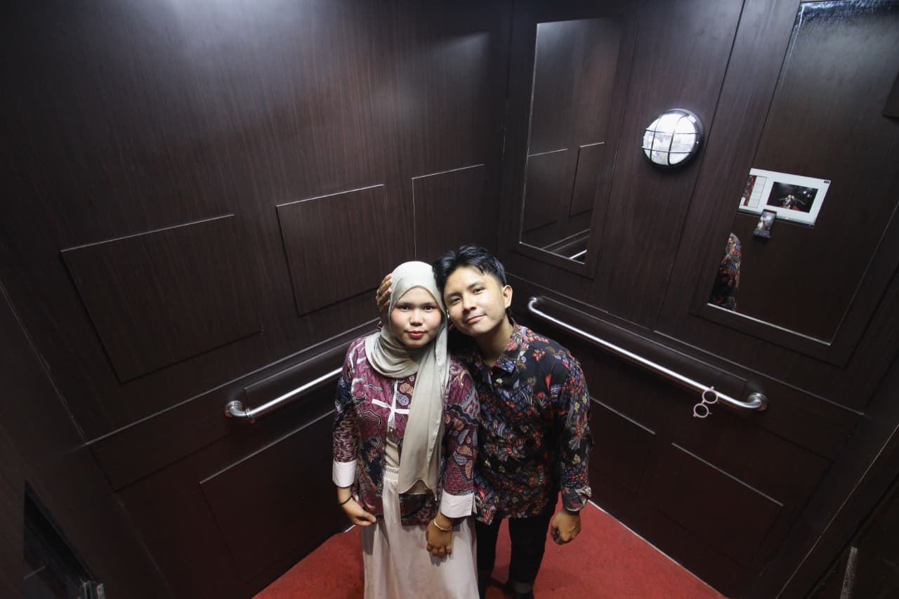
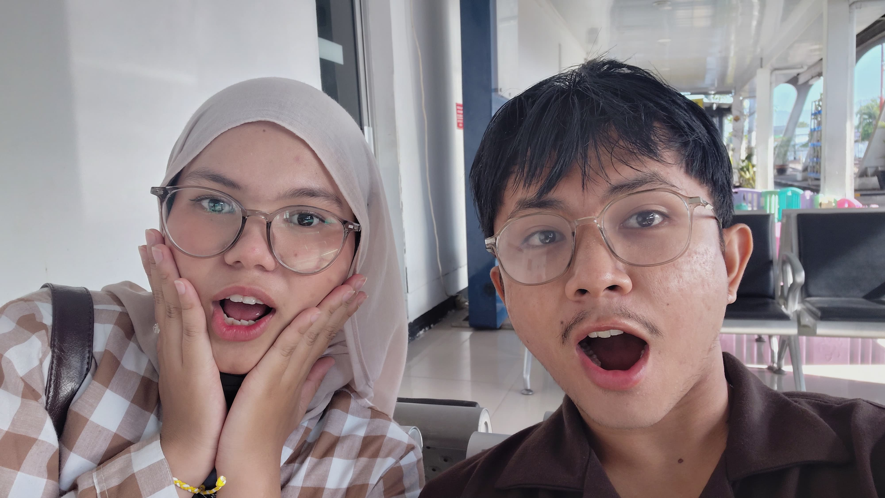
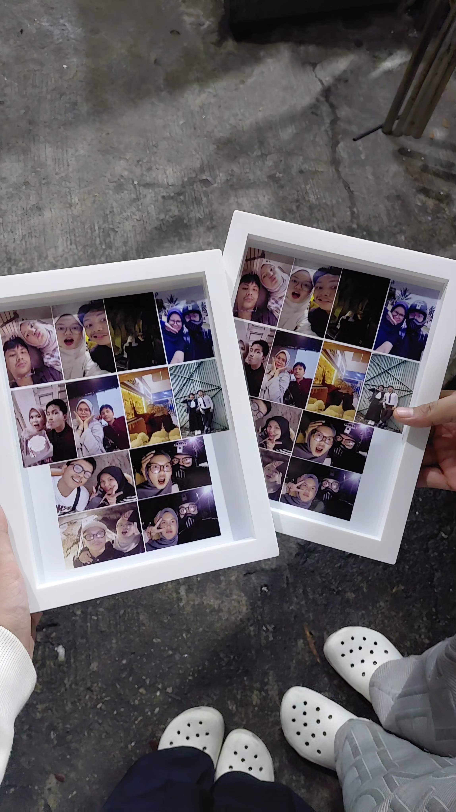
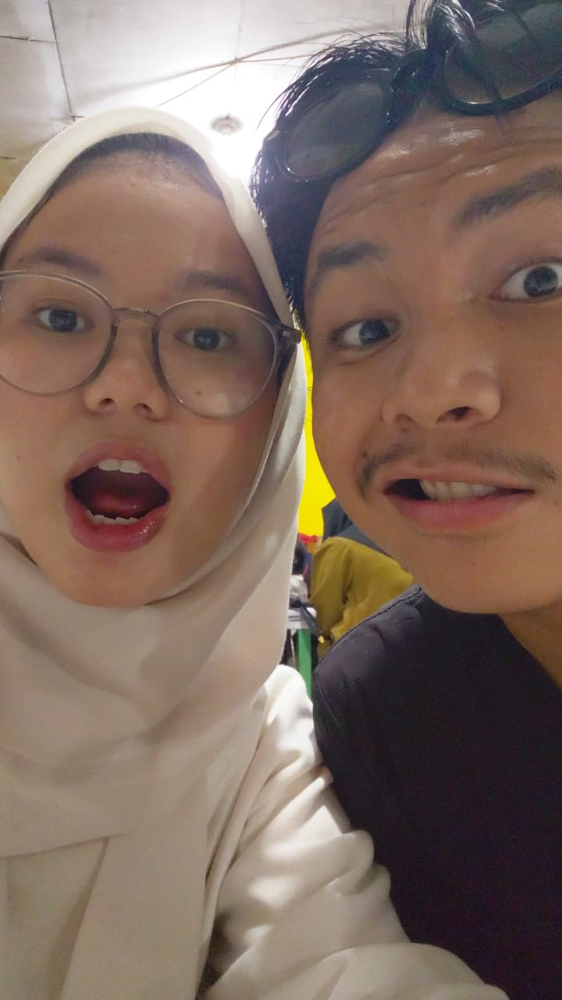
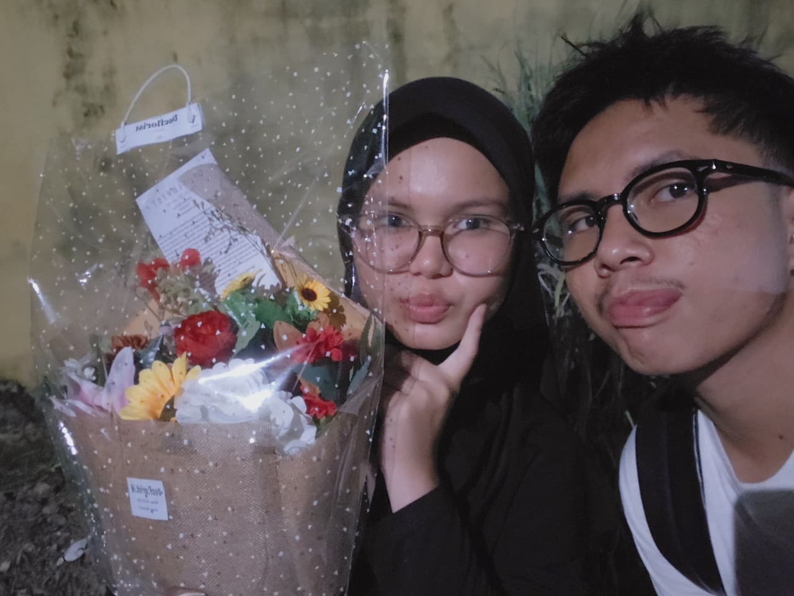
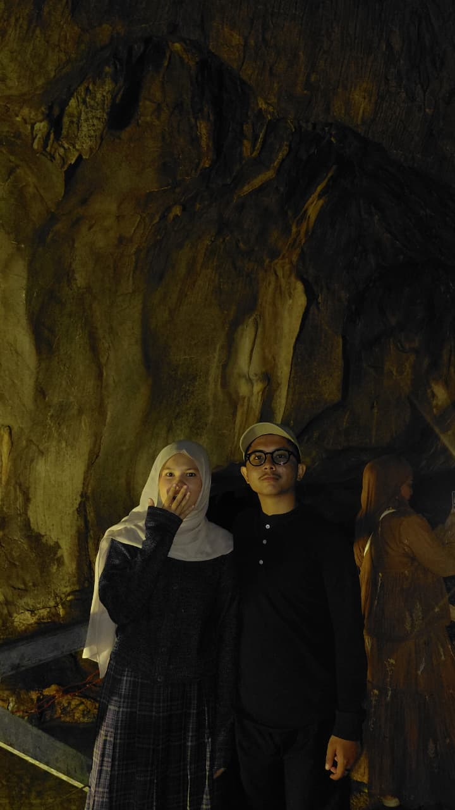
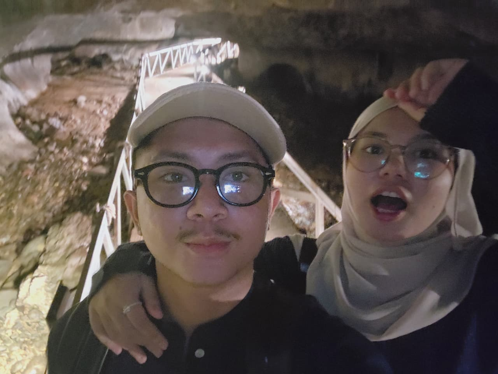
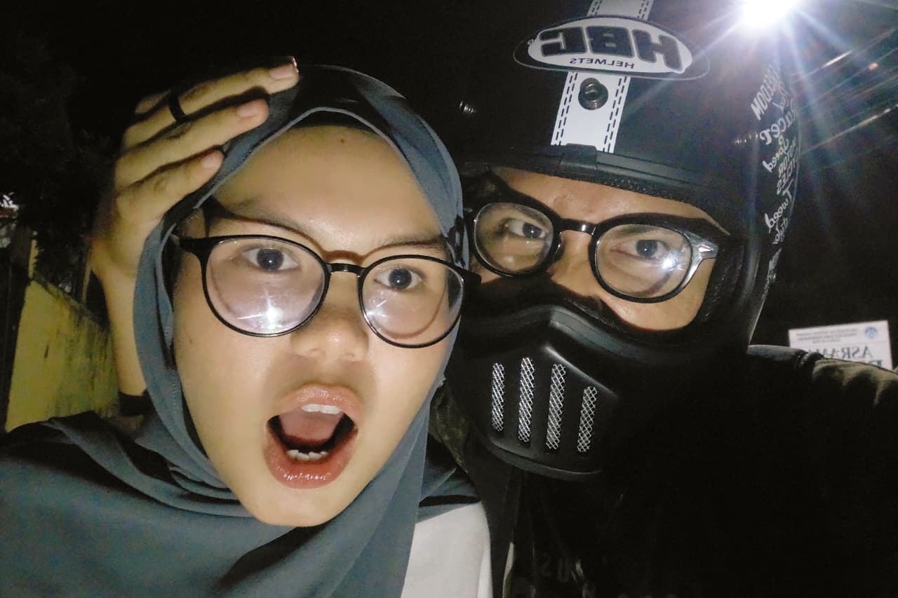
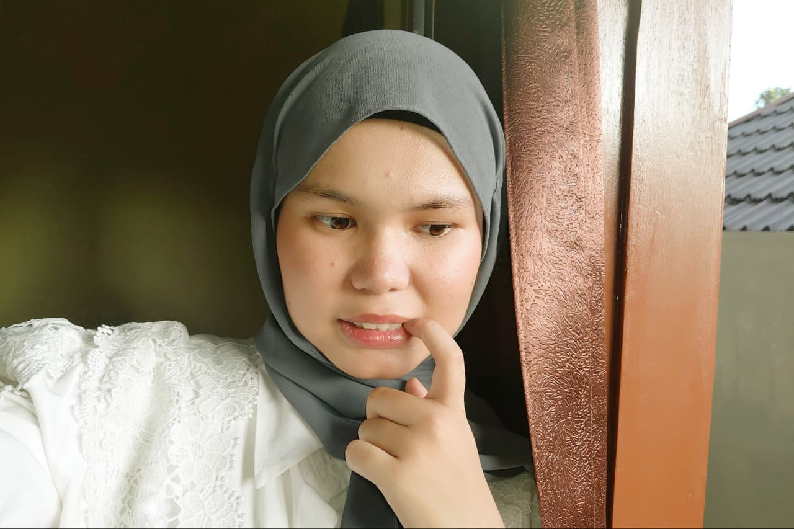

Obrolan Tanpa Batas
Dari cerita paling receh sampai rencana masa depan, selalu nyambung dan bikin lupa waktu.
"Di antara banyak hal yang berubah dan sibuknya hari-hari, pulang ke cerita kita selalu jadi tempat paling menenangkan."
Kita sudah berjalan bersama selama:
Potongan kecil yang bikin kebersamaan kita terasa hangat dan selalu dirindukan.
Dari cerita paling receh sampai rencana masa depan, selalu nyambung dan bikin lupa waktu.
Saat hari terasa panjang dan melelahkan, satu senyuman atau kabarmu saja sudah cukup melegakan.
Saling menguatkan, saling memahami, dan terus belajar menjadi lebih baik hari demi hari.
Klik foto mana saja untuk melihatnya lebih besar beserta catatan kenangannya.









Untuk Putri Meyriza,
Terima kasih sudah hadir dan memberi warna hangat di begitu banyak hari-hariku. Di tengah kesibukan dan berbagai proses yang sedang dijalani, punya ruang cerita bersamamu adalah hal yang selalu kusyukuri.
Semoga ke depannya kita bisa terus melangkah dengan saling menjaga, saling mendukung, dan mengumpulkan lebih banyak kenangan indah bersama.
Selalu sayang, Tama ♥